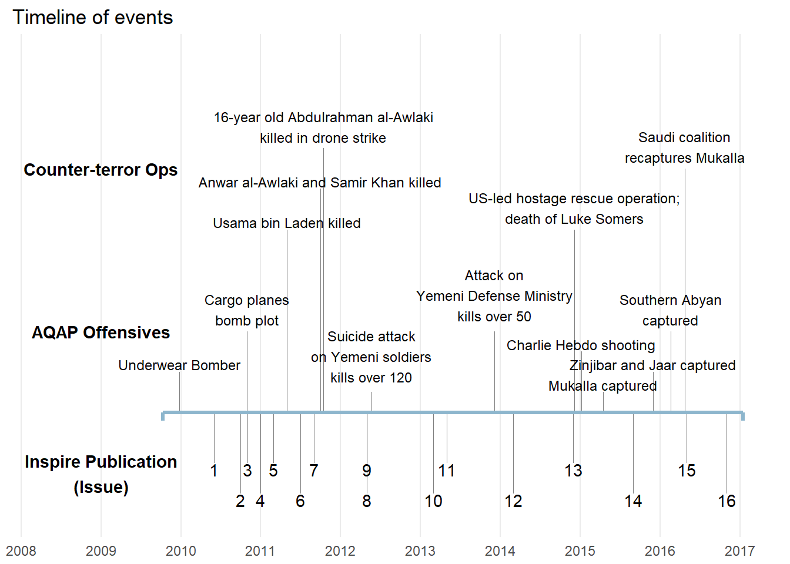

About Inspire
…And inspire the believers
Inspire is an online English-language magazine published by one of al-Qaeda’s main franchises, al-Qaeda in the Arabian Peninsula (AQAP). AQAP operates primarily in Yemen and Saudi Arabia, but has drawn attention for attempting various terrorist plots against Western targets in the Arabian peninsula and abroad. Since their creation in 2009, they have attempted multiple times to blow up planes and have conducted numerous deadly attacks against security personnel. In 2015, the group claimed responsibility for the shooting attack on the headquarters of the satirical newspaper Charlie Hebdo in Paris.


AQAP first published Inspire in July 2010, and currently there are 16 issues, the most recent having been issued in November 2016. A principal aim of Inspire is to recruit and mobilize helpers from English-speaking countries, and to encourage them to carry out attacks domestically as well as to join their militia in the Middle East. Inspire famously dedicates a section of each issue to a concept they call “Open Source Jihad”, or detailed how-to-guides for conducting domestic terrorist attacks. Dzhokhar Tsarnaev, the surviving Boston marathon bomber, claimed to have learned bomb-making from one of the Inspire guides.
| Issue | Cover Story | Release Date | # Pages |
|---|---|---|---|
| 1 | May our souls be sacrified for you! - Shaykh Anwar al-Awlaki | Jun 2010 | 66 |
| 2 | Photos from the Operations of Abyan | Oct 2010 | 73 |
| 3 | $4,200 | Nov 2010 | 22 |
| 4 | The Ruling on Dispossessing the Disbelievers Wealth in Dar al-Harb | Jan 2011 | 66 |
| 5 | The Tsunami of Change | Mar 2011 | 69 |
| 6 | Sadness, Contentment and Aspiration | Jul 2011 | 60 |
| 7 | The Greatest Special Operation of All Time | Sep 2011 | 37 |
| 8 | Targeting Dar al-Harb Populations | May 2012 | 62 |
| 9 | Wining on the Ground | May 2012 | 61 |
| 10 | We Are All Usama | Mar 2013 | 60 |
| 11 | Who and Why | May 2013 | 38 |
| 12 | Shattered: A Story About Change | Mar 2014 | 71 |
| 13 | Neurotmesis: Cutting the Nerves and Isolating the Head | Dec 2014 | 111 |
| 14 | Assassination Operations | Sep 2015 | 87 |
| 15 | Professional Assassinations | May 2016 | 89 |
| 16 | The 9/17 Operations | Nov 2016 | 47 |
Below is a timeline of issue releases with major offensives by AQAP and counter-offensives by the US and allies.

Description of events:
- On Christmas Day of 2009, Umar Farouk Abdulmutallab (“Underwear Bomber”) attempted and failed to detonate explosives in his underwear while onboard a plane flying to Detroit, Michigan. AQAP claimed to have coordinated the attack.
- etc.